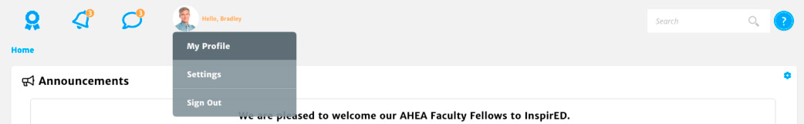

Your "Profile Screen" is all about you and includes tiles displaying Personal Information, Institution Profile, Communication Preferences, Credentials, Professional Bio, and Collaboration Interests.
To access your profile:
1. Click Profile Picture in Top Navigation
2. Click My Profile

The Personal Information Tile displays your profile picture, full name, position, department, and personalized message titled "My Thoughts". Your name, position, and department are populated through your personal record.
In the top right corner of this tile, you will see an Edit Profile button. Hover over the button to view the percent complete on your profile. The blue ring around your profile image also indicates your profile completion.
The Institution Profile Tile displays a summary of information about your institution, an includes your Institution Name, Public or Private Status, Campus, Location, and corresponding map. All this information is populated through your person record and matching institution profile.
The Communication Preferences Tile displays your Known Language(s), Email Address, Phone Number(s), and a link to your professional bio on your institution's website. Your Primary Language, Email, Phone Number(s), and Website are populated from our person record.
The Credentials Tile displays your Highest Education Level, Professional Memberships, and Certificates. Your Highest Education Level is displayed based on your person record.
The Professional Bio includes an Introduction Video, Field of Study, Areas of Expertise, Bio, Years of International Experience, and a place to provide a link to your CV.
The Collaboration Interests Tile is where all your Areas of Interest can be created and will be displayed.